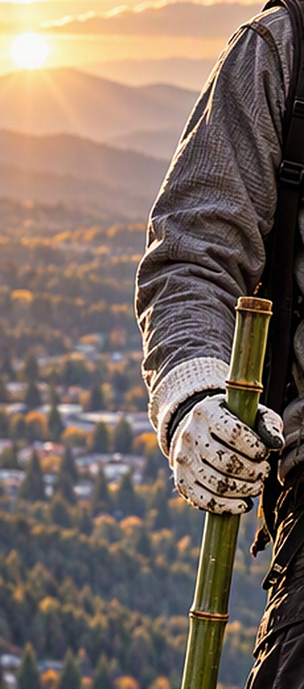
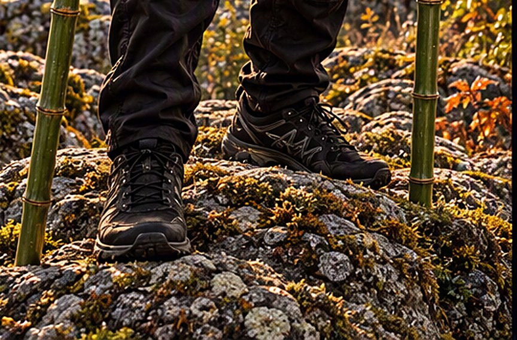

Subject Profile
A summary of what is consistently reported. Where accounts disagree, the disagreement is recorded rather than resolved.
Subject Overview
- Designation
- Unidentified recurring subject
- Common name
- “The Bamboo Avenger” (popular label)
- First report
- 12 SEP 1987 · Watershed Trail
- Latest report
- 19 OCT 2026 · Mount Ashland
- Reports on file
- 15 (6 locations)
- Region
- Ashland and the upper Rogue Valley, Oregon
Accounts describe a single hooded figure, usually seen at a distance, usually still, and usually alone. The figure is associated with trails, water and footbridges, and with small practical acts — a trail cleared, a car freed, a lost child returned — for which no one has taken credit.
Nothing in the record establishes that every report concerns the same individual, or any individual.
Equipment Documentation
A.2 · items E-1 to E-6

- E-1Bamboo staves, a pair. Green, unvarnished, roughly shoulder height, nodes at regular intervals. Carried one in each hand or crossed on the back. Never described as swung or raised.
- E-2Crossed-stave carry. Staves held in an X by a square fitting on a dark webbing harness. See Artifact D-04.
- E-3Hooded outerwear. Pale, heavily textured knit; hood up in every account. Front zip, described once as “bright green at the seam.” Small mark on the left chest — see Symbol 001.
- E-4Gloves. Pale, worn, soiled with earth.
- E-5Lower garments and footwear. Dark cargo trousers; dark trail shoes or boots.
- E-6Eyewear. Dark lenses. Reported even at dusk.
| Item | Reports | Notes |
|---|---|---|
| E-1 | 13 | Counts include “poles,” “sticks” and “bamboo.” |
| E-2 | 7 | Only when seen from behind. |
| E-3 | 14 | Hood described as up in all 14. |
| E-4 | 5 | |
| E-5 | 4 | |
| E-6 | 6 | Four of six at dusk or later. |
No weapon of any kind appears in the record. The staves are consistently described as carried, leaned upon, or used for walking.
Environmental Associations
A.3


The figure is reported almost exclusively where town gives way to woodland: along Ashland Creek, in the upper reaches of Lithia Park, on the watershed trails, and on the mountain. No report places the subject indoors, in a vehicle, or on a paved road other than the mountain road in snow.
Ten of fifteen reports fall between September and November. The archive has not determined whether this reflects the subject or the observers.
| Period | Reports |
|---|---|
| Dusk / sunset | 5 |
| Night / overnight | 4 |
| Dawn / before dawn | 2 |
| Daylight | 1 |
| Unknown (object found) | 3 |

Geographic Patterns
All fifteen reports fall inside a band roughly one mile wide that follows Ashland Creek south from the Plaza, through Lithia Park and the watershed, with a separate group on Mount Ashland. None comes from the valley floor east of the interstate or from the hills west of town.
| Location | Approx. elev. | Reports |
|---|---|---|
| Plaza District | 1,950 ft | 2 |
| Sixth Street area | 1,900 ft | 2 |
| Lithia Park | 2,000 – 2,300 ft | 2 |
| Lithia Bridge | 2,300 ft | 2 |
| Watershed Trail | 2,800 – 3,800 ft | 4 |
| Mount Ashland | 6,000 – 7,500 ft | 3 |
- Near water
- 10 of 15 within a quarter mile of Ashland Creek
- Trail access
- 9 of 15 reached only on foot
- Gap
- No reports between 3,800 and 6,000 ft
The pattern may reflect where people walk rather than where anything is. The archive has not corrected for this.
Recurring Characteristics
- R-1Stillness. The subject is most often first noticed standing motionless. 9 of 15.
- R-2Distance. Witnesses rarely report being closer than a stone’s throw. No report describes physical contact, other than the pushed car (RVF-1996-011).
- R-3Silence. No words are attributed to the subject in any report. Four accounts note the absence of footsteps.
- R-4Service. A practical task found completed: a path cleared, a bicycle repaired, a wallet returned, a sidewalk shoveled. 11 of 15.
- R-5Departure unobserved. In 12 of 15 accounts the witness looks away briefly, or the path bends, and the subject is no longer present.
- R-6Hair. Long, “rope-like” hair below the hood. 6 of 15.
Characteristics are tallied as stated by witnesses and are not adjusted for exaggeration, suggestion, or prior exposure to Reconstruction 001.